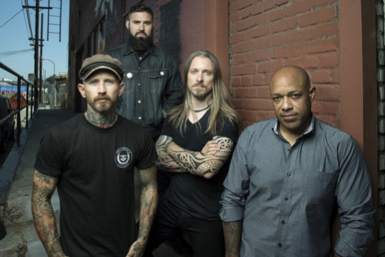
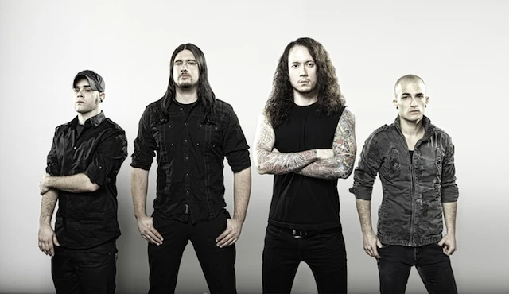
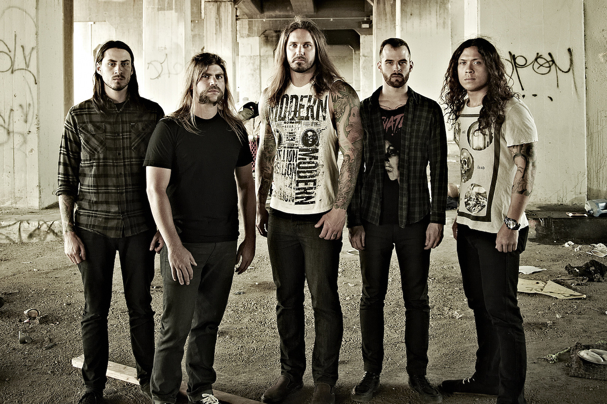
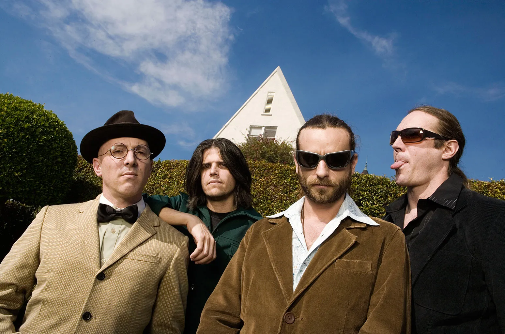
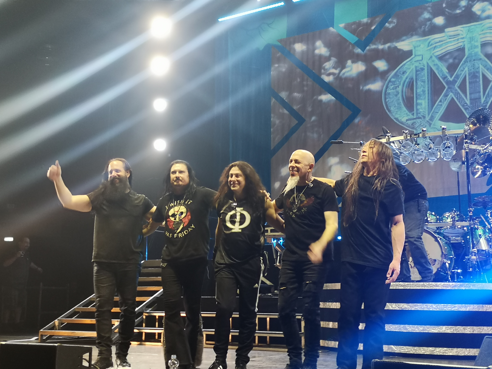
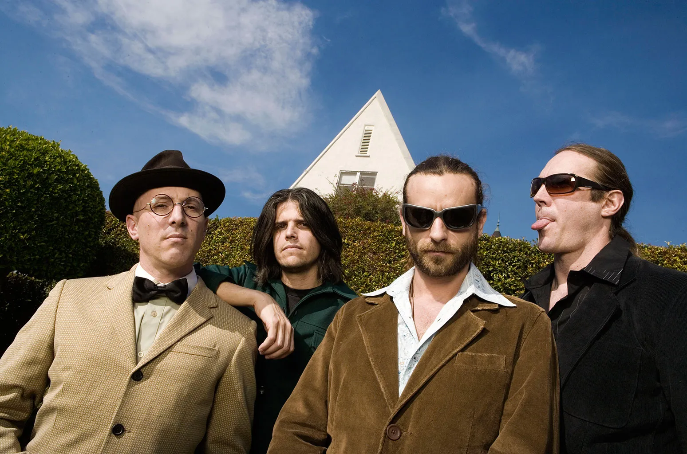
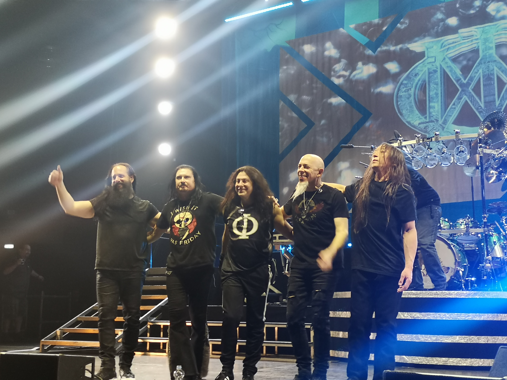

The History Of Heavy Metal
The Early 2000's
A new millennium brings fewer changes to our genre than you may expect, new subgenres begin to emerge, but the genre is dominated by behemoths like Metallica and Korn. One of the most prominent subgenres to emerge out of the early 2000s was MetalCore. The subgenre home to bands like Trivium, Bullet For My Valentine, and KIllswitch Engage, MetalCore is a time period with a subtle but profound influence. From here, the journey of metal starts to get staler, but traces of MetalCore are in everything moving forward.



Killswitch Engage
Trivium
As I LAy Dying
The Late 2000's
The late 2000s is a simpler time, bands like Dream Theatre and T00L continued to push metal in a more mathematical and technical direction, leading to the creation of Prog, or Progressive metal. It is also at this time that metal started to die out in mainstream popularity, with less new bands emerging and the sudden rise of pop and rap in modern music.
 



Opeth
T00L
Dream Theatre
NEXT DECADE